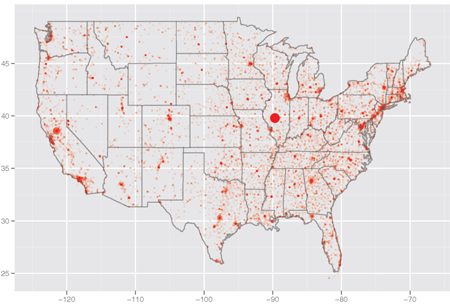

Design For America
Recovery And Reinvestment Act

How many jobs are being created?
A few places report tens of thousands of jobs created, but 80% of prime recipients have not reported this information at all, 8% report no jobs, and 9% report less than 10 jobs created from the funding. Concern: How do the recipients substantiate their job creation claims? We would expect that similar types and amounts of funding might be reporting similar numbers of jobs created, but this is not the case.
The big three are The State of Illinois (52000), California Governor's Office (35000) and The Texas Governor's Office (24000).
Road building? There is a "stringy" pattern in the location of jobs created. Crudely overlaying a map of the US highways suggests that these might correspond to the road building projects, particularly along the north-eastern corridor, and northwest. You can also zoom in to various regions and overlay roads on the google map to investigate this.
{kind=link}
Search the data: Tabular summary of jobs created.
Data: Subset of the data containing records on jobs created by recipient.
Acknowledgements
This analysis was conducted by students and faculty in the
Department of Statistics graphics working group
at Iowa State University.

This work is licensed under a Creative Commons Attribution 3.0 Unported License.
Last modified: Mon May 17 11:07:00 CDT 2010